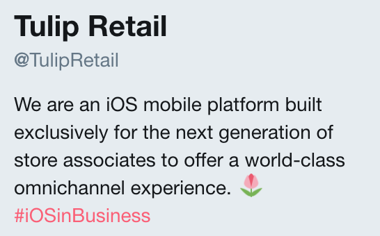
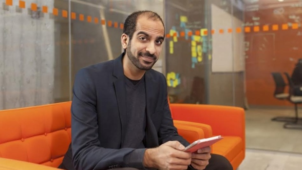

Tulip Retail has an innovative product, a powerful cloud-based, mobile platform
built to empower store associates. Tulip brings the best of online retail to brick-and-mortar
stores by delivering a powerful application that enhances the in-store experience.

The iOS app used by store associates is an extremely powerful tool to connect associates with
customers in a brand new way. The idea of introducing omnichannel avenues into a brick-and-mortar
store has been revolutionary thus far and continues to pick up momentum. Tulip has become a leader in
arming retailers with important data and tools for success. Through this process Tulip has become an
industry leader in the market space, with nobody else doing what Tulip is doing.

Ali Asaria, CEO of Tulip Retail, first founded the company well.ca before
moving on to found Tulip. Well.ca is an online health, beauty and pharmaceutical retailer based entirely
in Canada. Ali was also the man behind the BrickBreaker game found on BlackBerry devices from his days
working at Research in Motion. Ali started Tulip Retail in Waterloo, ON in 2013 and has quickly grown in
size to almost 200 employees across Canada, the U.S. and Europe.
Official Title: Full-Stack Developer
Description:
We are looking for enthusiastic software developers who aren't afraid to take on big
and exciting challenges. We are a small, growing team of engineers that believe in deploying
often and fast, and pushing each other to become better at our craft. As a software developer,
you will design and build a complete solution, including the latest in web and mobile technology.
You will be part of a mid-sized startup that is poised to break in to a massive untapped space.
My Role:
* Work with an agile and highly skilled development team
* Build and design RESTful APIs
* Create elegant and functional mobile and web applications
* Integrate the Tulip platform with the retail systems of world class brands
Expectations:
* Reading and interpreting big data
* Experience with common web technologies, such as: PHP, mySQL, nginx, redis, Python
* Thoughtful problem solvers who can simplify complex processes
* Experience building and shipping iOS applications is a plus
* No jerks
My Time at Tulip:
During my 4 month co-op at Tulip I worked on a team which serviced the client well.ca
the team consisted of myself, another co-op and our manager. The small team dynamic meant that we all had to
be able to deal with all components of the very large and intricate website.
Tulip Retail was an incredible place to work, I was fortunate to experience the rich culture of a tech startup in the heart of Toronto. Being my first co-op job I did not know what to expect at any workplace. The culture of a tech startup such as Tulip is very different from what I had expected. I believe everyone should take the opportunity to experience this easy-going and open culture. The biggest surprise that I encountered was the openness among the company, we would have weekly updates about what was going on in the company. These updates would include an update about plans for the future of the company and overall management decisions. In any other company I have worked at in the past, these are not the sorts of topics that are discussed with all staff and are more kept on a need to know basis. This was an incredible learning experience for me.
The benefits of working in a startup don't just end with the culture, there was an immense amount of support and encouragement given by all members of the team. The support I was shown from my co-workers was something I could never have imagined. I worked on a team of three, where two of us were co-op students. Sometimes my manager would be too busy, managing, but I would still be able to find the assistance I needed to complete a task through other channels in the company. Being my first co-op position this was a huge advantage to me, enabling me to learn a vast amount of skills and expand my knowledge of many different topics. People at Tulip were very friendly and often times I found myself learning more from them about different software applications than I learn from my professors in school.
I met some amazing and very talented people working at Tulip and would recommend working here to anyone looking for a fun, challenging and rewarding workplace :D